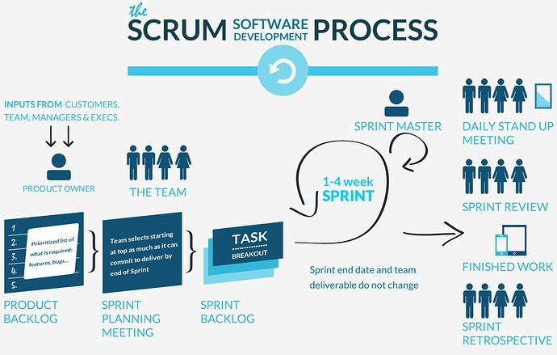

Pengertian Metodologi Scrum
Scrum adalah sebuah metode iteratif yang termasuk dalam metode Agile tentang bagaimana cara mengelola dan menjalankan sebuah proyek.
Scrum bisa digunakan untuk mengelola segala jenis proyek mulai dari pembuatan software, website, hardware, marketing, event planning, dan sebagainya.
Scrum membantu Anda untuk mengorganisir sebuah tim dan Anda harus memiliki komunikasi yang kuat antar member tim tersebut. Scrum mengatakan bahwa setiap “sprint” dimulai
dengan meeting singkat untuk perencanaan dan diakhiri dengan review.

Tahapan Metodologi Scrum
-
Pemilik produk membuat daftar keinginan yang diprioritaskan yang disebut backlog produk.
-
Selama perencanaan sprint, tim memilih salah satu item dari urutan teratas daftar keinginan tersebut dan memutuskan bagaimana mereka akan menjalankan potongan tersebut.
-
Tim memiliki sejumlah waktu, yang disebut dengan istilah sprint (biasanya dua sampai empat minggu) untuk menyelesaikan pekerjaannya, namun setiap harinya akan ada
pengecekan untuk melihat progress pekerjaan (Scrum harian).
-
Sepanjang jalan, Scrum Master membuat tim tetap fokus pada tujuannya.
-
Di akhir sprint, pekerjaan harus berpotensi untuk dikirim, siap untuk diserahkan kepada pelanggan, diletakkan di rak toko, atau ditunjukkan kepada pemangku kepentingan.
-
Sprint diakhiri dengan review sprint dan retrospektif.
-
Seiring sprint berikutnya dimulai, tim memilih item lain lagi dari backlog produk dan mulai bekerja lagi.